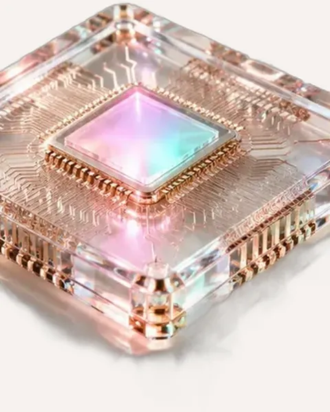
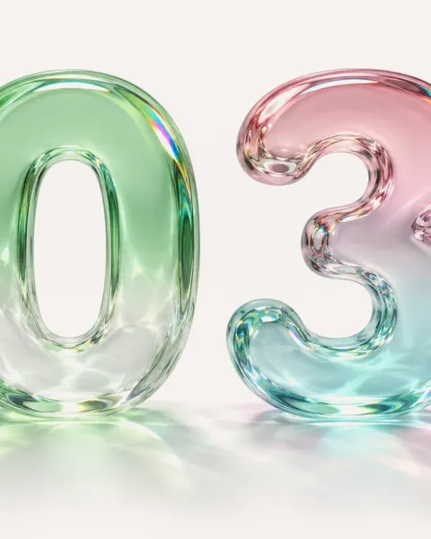

01 · the vote
america voted on ai. ai lost.
on election day, 41 towns and cities voted on data centers, the giant buildings where chips like this one do their work.
before you scroll, guess. how many of the 41 went against them?
this little piece of glass is what the whole week was about. follow it from the factory floor to where it lives, and see who came for it along the way.
on election day, 41 towns and cities voted on data centers, the giant buildings where chips like this one do their work.
before you scroll, guess. how many of the 41 went against them?
the one clear dot is harwood, north dakota.
nvidia fell 8.2% by thursday midday, and micron fell nearly 14%. ubs says about 30% of the data center capacity planned for 2028 is now at risk.
elon musk's answer the night of the results: "data centers in space looking pretty appealing right now." real plan or a joke?
al jazeera and reuters, nov 5 · tikr · the line shows the two prices, not every trade in between
the ceo of the company that makes the world's most wanted chips is at the center of a spy story. it's two stories at once. swipe between them.
jensen huang wrote to nvidia staff, "i was unfaithful to my wife." the board opened an independent investigation and says it has no reason to believe national security or nvidia secrets were compromised.
reports say u.s. intelligence believes the woman was recruited by china's ministry of state security, and that she was an executive at megaspeed, a firm accused of smuggling $2 billion in ai chips into china. china calls the claims unfounded, and nvidia denies any improper dealings.
a town that votes no on a data center is doing math, and the math isn't crazy. these buildings need a lot of power and water, and the neighbors are the ones who live with that. somebody still has to show those towns what they get back.
everything behind these words is one continuous shot of that chip. every time you scroll, you move it forward a frame.
i directed every shot with google's veo model, then built the page, the scroll and the stories with claude. each new shot starts on the exact last frame of the one before it, so you never see a cut.
drag or keep scrolling. tap any of them.

edition 04one chip, one weekyou're in it
edition 03the flight through china's ai crashfly itagents that hold their own on a healthcare phone line, and sites like this one for businesses that want to stand out. or just tell me what you're building.
what's your business?
tap one and see what yours could do.
the elevenlabs link is an affiliate link, so it supports me too.